Debugging a Scala Compilation Issue, a journey into Variance and LUB
At work, I recently encountered a tricky compilation issue. To debug it, I extracted the minimal amount of code necessary to reproduce the problem. After a lot of experimentation, I sought help from a French Scala community. By chance, my colleague Marc came to the rescue. Since this issue might affect others, I’m detailing the journey in this post to help you understand and resolve similar challenges.
Introduction
The issue revolves around the following types:
trait Payload1
trait Payload2
trait Rejection
case class ARejection(reason: String) extends Rejection with Payload1 with Payload2
case class BRejection(reason: String) extends Rejection with Payload1 with Payload2
For better visualization, here’s a class diagram:

What Are We Trying to Achieve?
The objective is to create a reusable error handler that can handle various payload types, such as Payload1 or Payload2.
In the real use case, the ZIO library is involved. However, since the issue is unrelated to ZIO itself, this simplified version is sufficient.
case class ZIO[+A](a: A) {
def catchSome[A1 >: A](pf: PartialFunction[Throwable, ZIO[A1]]) : ZIO[A1] = pf.applyOrElse(new IllegalArgumentException, (_ : Throwable) => this)
}
def handleA: PartialFunction[Throwable, ZIO[ARejection]] = {
case _: IllegalArgumentException => ZIO(ARejection("a"))
}
new ZIO(new Payload1() {}).catchSome(handleA)
Why Does This Work?
The method catchSome expects a PartialFunction[Throwable, ZIO[Payload1]], but we’re passing a PartialFunction[Throwable, ZIO[ARejection]].
To understand why this works, we need to discuss variance.
Variance
This isn’t a variance tutorial, but if you’re unfamiliar, I recommend Scala’s variance documentation. For our purposes, here’s a brief overview:
val f : String => ARejection = ARejection.apply
val g : String => Rejection = f
This works because:
- Functions are covariant in their return type (
trait Function1[-T1, +R]) ARejectionis a subtype ofRejection
Thus, String => ARejection is a subtype of String => Rejection
val h : String => ZIO[ARejection] = name => ZIO(ARejection(name))
val i : String => ZIO[Rejection] = h
It still works because:
- ZIO is covariant on its type
ARejectionis a subtype ofRejection
So ZIO[ARejection] is a subtype of ZIO[Rejection]
And because functions are covariant in their return type, String => ZIO[ARejection] is a subtype of String => ZIO[Rejection]
Here’s a visual representation of the relationships:

The compilation issue
Now, we’d like to manage a second type of exception, triggering a BRejection. Here are two straightforward solutions:
def handleB: PartialFunction[Throwable, ZIO[BRejection]] = {
case _: IllegalStateException => ZIO(BRejection("b"))
}
new ZIO(new Payload1() {}).catchSome(handleA)
val solution1 : ZIO[Payload1] = new ZIO(new Payload1() {})
.catchSome(handleA.orElse(handleB))
val solution2 : ZIO[Payload1] = new ZIO(new Payload1() {})
.catchSome(handleA)
.catchSome(handleB)
While these work, they aren’t as elegant as they could be. Ideally, we’d like a single, unified handler:
def handle: PartialFunction[Throwable, ZIO[X]] = {
case _: IllegalArgumentException => ZIO(ARejection("a"))
case _: IllegalStateException => ZIO(BRejection("b"))
}
What is the expected type of X ?
The Scala compiler computes the least upper bound (LUB) of the branch types. The LUB is the most specific type that is a supertype of all branches.
For ARejection and BRejection, the LUB is Rejection with Payload1 with Payload2 because they share these traits.
Thus, the inferred type X is Rejection with Payload1 with Payload2.
Conclusion
Scala’s powerful type system can sometimes introduce surprising challenges, even for seemingly simple tasks. While it may be tempting to duplicate code instead of generalizing, doing so can lead to missed learning opportunities.
By exploring variance and the mechanics of type inference, we’ve seen how Scala arrives at its conclusions. Understanding concepts like LUB and variance not only helps solve problems but also deepens our understanding of Scala itself.
Next time you encounter such an issue, take it as a chance to dive into the type system—you might learn something valuable!